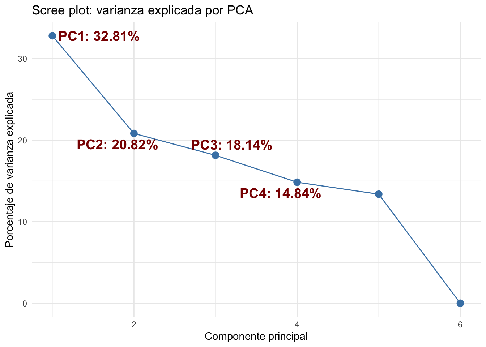
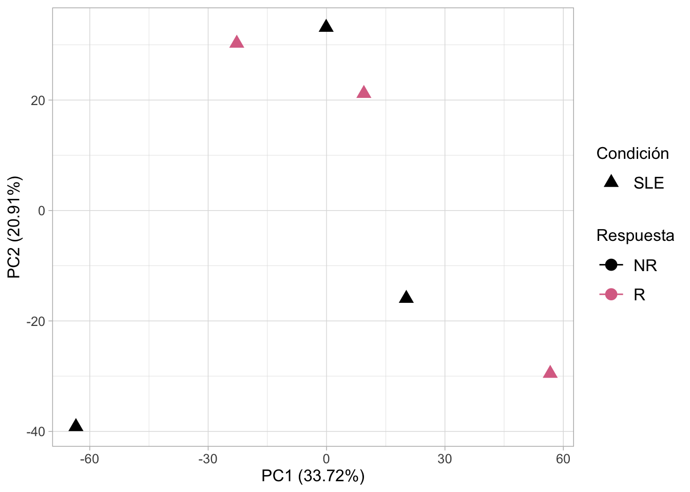
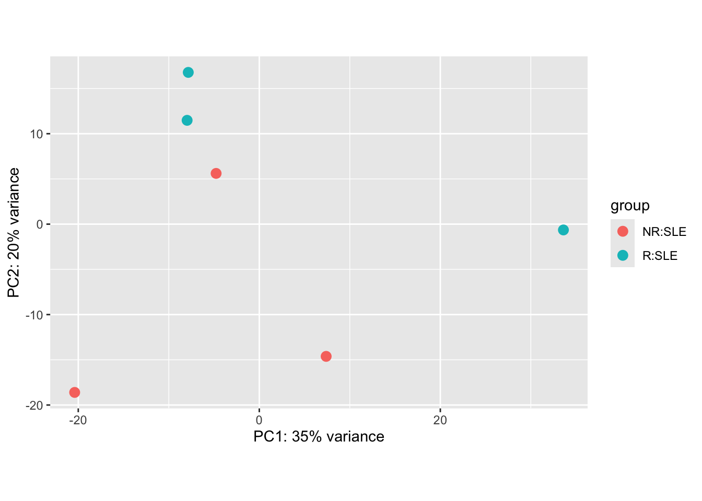
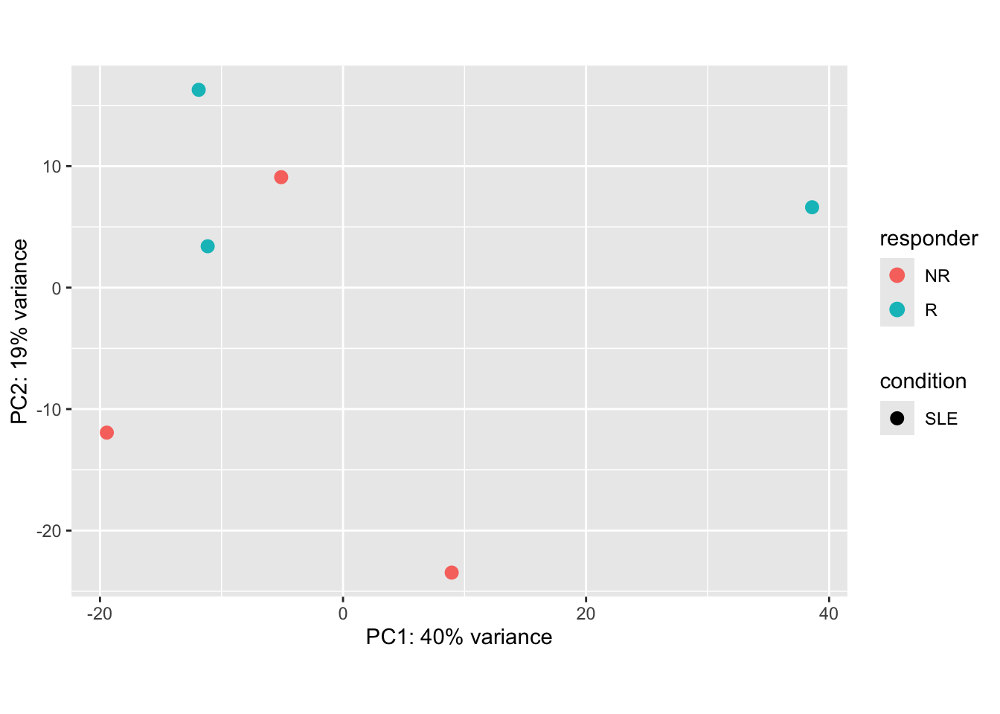

library(here) # Facilitar localización de archivos
library(tidyverse) # Paquetes como dplyr, ggplot, etc
library(tximport) # Importar datos de Kallisto en R
library(DESeq2) # Normalización y análisis de DEG
library(reshape2)
library(ggrepel)
# Manipulacion de GTF
library(GenomicFeatures)
library(txdbmaker) # BiocManager::install("txdbmaker")Preprosamiento de los datos
Cargar paquetes
Establecer mi ruta
workdir <- here("Practica_Dia3")Paso 1. Crear el archivo tx2gene a partir del GTF
Descargue el GTF de Ensembl, ya que el transcriptoma de referencia proviene de esa fuente y nos interesa que los IDs coincidan.
# Cargar el archivo GTF.gz
txdb <- txdbmaker::makeTxDbFromGFF(
paste0(workdir, "/data/Homo_sapiens.GRCh38.115.gtf.gz"),
format="gtf")Import genomic features from the file as a GRanges object ... OK
Prepare the 'metadata' data frame ... OK
Make the TxDb object ... Warning in .get_cds_IDX(mcols0$type, mcols0$phase): The "phase" metadata column contains non-NA values for features of type
stop_codon. This information was ignored.Warning in .makeTxDb_normarg_chrominfo(chrominfo): genome version information
is not available for this TxDb objectOKNombre de las columnas del objetivo txdb
columns(txdb) [1] "CDSCHROM" "CDSEND" "CDSID" "CDSNAME" "CDSPHASE"
[6] "CDSSTART" "CDSSTRAND" "EXONCHROM" "EXONEND" "EXONID"
[11] "EXONNAME" "EXONRANK" "EXONSTART" "EXONSTRAND" "GENEID"
[16] "TXCHROM" "TXEND" "TXID" "TXNAME" "TXSTART"
[21] "TXSTRAND" "TXTYPE" Ahora si seleccionamos las columnas de interes de los transcritos (TXNAME) y genes (GENEID)
# Extraer la información de transcritos con sus nombres y genes
transcripts <- transcripts(txdb, columns=c("TXNAME", "GENEID"))
# Construir el data.frame con las columnas deseadas
tx2gene <- data.frame(
TXNAME = transcripts$TXNAME,
GENEID = transcripts$GENEID
) %>%
# Seleccionar columnas de interes y renombrar columna GENEID
dplyr::select(TXNAME, GENEID = GENEID.value)
# Ver los primeros registros
head(tx2gene) TXNAME GENEID
1 ENST00000832824 ENSG00000290825
2 ENST00000832825 ENSG00000290825
3 ENST00000832826 ENSG00000290825
4 ENST00000832827 ENSG00000290825
5 ENST00000832828 ENSG00000290825
6 ENST00000832829 ENSG00000290825Paso 2. Importar datos de salida de kallisto a R
Opción A. Importar archivo .h5 de kallisto (se cargan a nivel de transcritos)
# Definir la carpeta donde están los resultados
ruta <- "/Users/ecoss/Documents/RNAseq_classFEB2026/Practica_Dia3/counts/kallisto_quant"
# Listar todos los archivos .h5 dentro de las subcarpetas
archivos_h5 <- list.files(path = ruta,
pattern = "\\.h5$",
full.names = TRUE,
recursive = TRUE)
# Extraer el nombre SRR de la ruta (basename de la carpeta)
nombres_srr <- basename(dirname(archivos_h5))
# colocarle nombres
names(archivos_h5) <- nombres_srr
# importar archivo
txi.kallisto <- tximport(archivos_h5, type = "kallisto", txOut = TRUE)1 2 3 4 5 6 En este caso lo que ocurre es que txOut = TRUE le dice a tximport que no colapse los transcritos a nivel de gen, sino que te devuelva directamente las abundancias de cada transcrito.
Número de transcritos detectados:
all_transcripts <- rownames(txi.kallisto$abundance)
length(all_transcripts)[1] 532617Opción B. Importar archivo .tsv de kallisto (se cargan a nivel de genes) ⭐ Manera correcta
# Definir la carpeta donde están los resultados
ruta <- "/Users/ecoss/Documents/RNAseq_classFEB2026/Practica_Dia3/counts/kallisto_quant"
# Listar todos los archivos .h5 dentro de las subcarpetas
archivos_tsv <- list.files(path = ruta,
pattern = "\\.tsv$",
full.names = TRUE,
recursive = TRUE)
# Extraer el nombre SRR de la ruta (basename de la carpeta)
nombres_srr <- basename(dirname(archivos_tsv))
# colocarle nombres
names(archivos_tsv) <- nombres_srr
# importar archivo
txi.kallisto <- tximport(archivos_tsv, type = "kallisto", tx2gene = tx2gene, ignoreTxVersion=TRUE)Note: importing `abundance.h5` is typically faster than `abundance.tsv`reading in files with read_tsv1 2 3 4 5 6
transcripts missing from tx2gene: 24024
summarizing abundance
summarizing counts
summarizing lengthnames(txi.kallisto)[1] "abundance" "counts" "length"
[4] "countsFromAbundance"
NoteUsar
ignoreAfterBar=TRUE
Algunas anotaciones tienen IDs como ENST00000622028.1|extraInfo. En ese caso, ignoreAfterBar=TRUE ayuda a cortar lo que está después del |.
Seleccionar todos los genes contenidos en esta variable
all_genes <- rownames(txi.kallisto$abundance)
length(unique(all_genes))[1] 77861Paso 3. Filtrar biotipos
Decidi emplear el (Ensembldb.RData). Cargando la variable annotations_ENSG en nuestro ambiente, para más información revisa el script Ensembl_database.R.
load(paste0(workdir, "/data/Ensembldb.RData"))Filter txi related with biotypes from Ensembl.
hsapiens_biotype <- dplyr::select(annotations_ENSG, ensembl_gene_id, hgnc_symbol, gene_biotype)
hsapiens_biotype <- hsapiens_biotype %>% distinct() # eliminar duplciados
colnames(hsapiens_biotype)[1] <- "gene"
# This retrieves all gene identifiers from the txi object (the output of tximport), specifically from the abundance matrix.
my_biotypes <- hsapiens_biotype[hsapiens_biotype$gene %in% all_genes,]
dim(my_biotypes) # [1] 21906 2[1] 77851 3# We filter the annotation data to keep only genes that are present in the expression data. The result is a data frame (my_biotypes) with 21,949 annotated genes.
levels(as.factor(my_biotypes$gene_biotype)) [1] "IG_C_gene" "IG_C_pseudogene"
[3] "IG_D_gene" "IG_J_gene"
[5] "IG_J_pseudogene" "IG_pseudogene"
[7] "IG_V_gene" "IG_V_pseudogene"
[9] "lncRNA" "miRNA"
[11] "misc_RNA" "Mt_rRNA"
[13] "Mt_tRNA" "processed_pseudogene"
[15] "protein_coding" "pseudogene"
[17] "ribozyme" "rRNA"
[19] "rRNA_pseudogene" "scaRNA"
[21] "snoRNA" "snRNA"
[23] "sRNA" "TR_C_gene"
[25] "TR_D_gene" "TR_J_gene"
[27] "TR_J_pseudogene" "TR_V_gene"
[29] "TR_V_pseudogene" "transcribed_processed_pseudogene"
[31] "transcribed_unitary_pseudogene" "transcribed_unprocessed_pseudogene"
[33] "translated_processed_pseudogene" "unitary_pseudogene"
[35] "unprocessed_pseudogene" "vault_RNA" In this step, we filter out unwanted gene biotypes from the annotation data to focus on more relevant gene categories for our analysis:
filtered_biotypes <- my_biotypes[!(my_biotypes$gene_biotype %in% c('rRNA', 'ribozyme')), ]
dim(filtered_biotypes) # [1] 21887 2[1] 77790 3# Next, we extract the list of filtered gene names and ensure they match those present in the expression dataset:
filtered_genes <- filtered_biotypes$gene
filtered_genes <- all_genes[all_genes %in% filtered_genes]
length(filtered_genes) # 77786[1] 77786# This code filters the txi object to retain only the genes that passed the biotype filtering, preparing the dataset for downstream analysis:
# Remove counts of rRNA
txi_minuslast <- txi.kallisto[-length(txi.kallisto)]
filtered_txi <- lapply(txi_minuslast, function(df) {
# print(head(rownames(df)))
df[rownames(df) %in% filtered_genes, ]
})
names(filtered_txi) <- c("abundance" , "counts","length")
filtered_txi$countsFromAbundance <- "no"
dim(filtered_txi$counts) [1] 77786 6Renombrar nombres de filas por nombres symbolicos
# Supongamos que filtered_txi$counts es tu matriz de expresión
counts_df <- filtered_txi$counts %>%
as.data.frame() %>%
tibble::rownames_to_column("gene") # convertir rownames a columna
# Unir por la columna 'gene'
counts_annot <- counts_df %>%
left_join(hsapiens_biotype, by = "gene")
# Ahora puedes usar hgnc_symbol como rownames
# NOTA: no se pude correr esto porque los geneID se repiten
# counts_annot <- counts_annot %>%
# tibble::column_to_rownames("hgnc_symbol")
head(counts_annot) gene SRR27190676 SRR27190684 SRR27190685 SRR27190700 SRR27190708
1 ENSG00000000003 26.9236 5.75505 1.0000 0.00000 1.0000
2 ENSG00000000005 0.0000 0.00000 0.0000 0.00000 0.0000
3 ENSG00000000419 101.6179 193.22364 213.3469 159.26060 263.4083
4 ENSG00000000457 316.8199 507.05492 396.9711 251.21651 476.2147
5 ENSG00000000460 104.4045 127.29482 127.6258 55.08293 124.5893
6 ENSG00000000938 22620.4683 42163.67515 32992.1840 37586.37920 43244.7923
SRR27190710 hgnc_symbol gene_biotype
1 36.72753 TSPAN6 protein_coding
2 0.00000 TNMD protein_coding
3 236.46230 DPM1 protein_coding
4 428.10453 SCYL3 protein_coding
5 242.72167 FIRRM protein_coding
6 24425.16548 FGR protein_codingAlmacenar la salida
# Guardar variable
save(filtered_txi, file = paste0(workdir, '/counts/kallisto_outputs/txi_filtered_v2.RData'))
# Guardar en csv
write_csv(as.data.frame(filtered_txi$counts), file = paste0(workdir, '/counts/kallisto_outputs/txi_filtered_v2.csv'))Paso 4. Crear/Cargar la metadata
En este punto las cuentas tienen
head(filtered_txi$counts) SRR27190676 SRR27190684 SRR27190685 SRR27190700 SRR27190708
ENSG00000000003 26.9236 5.75505 1.0000 0.00000 1.0000
ENSG00000000005 0.0000 0.00000 0.0000 0.00000 0.0000
ENSG00000000419 101.6179 193.22364 213.3469 159.26060 263.4083
ENSG00000000457 316.8199 507.05492 396.9711 251.21651 476.2147
ENSG00000000460 104.4045 127.29482 127.6258 55.08293 124.5893
ENSG00000000938 22620.4683 42163.67515 32992.1840 37586.37920 43244.7923
SRR27190710
ENSG00000000003 36.72753
ENSG00000000005 0.00000
ENSG00000000419 236.46230
ENSG00000000457 428.10453
ENSG00000000460 242.72167
ENSG00000000938 24425.16548Crear mi metadata a partir de la información recolectada de NCBI, GEO y ENA/EBI. Todas son muestras del día 7 posterior a la vacunación de la vacuna de COVID (BNT162b2 SARS-CoV-2). Si quieres repasar esta parte puedes revisar las diapositivas proporcionadas previamente.
metadata <- data.frame(
sample_ID = c("SRR27190676", "SRR27190684", "SRR27190700",
"SRR27190685", "SRR27190708", "SRR27190710"),
sample_title = c("p18.S028.day7", "p17.S023.day7", "p12.S013.day7",
"p14.S018.day7", "p1.S003.day7", "p8.S008.day7"),
responder = c(rep("NR", 3), rep("R", 3)),
condition = "SLE",
day = "d7"
)
head(metadata) %>%
DT::datatable()Paso 5. Crear el objeto DESEq2
dds <- DESeqDataSetFromTximport(txi = filtered_txi,
colData = metadata,
design = ~responder)Warning in DESeqDataSet(se, design = design, ignoreRank): some variables in
design formula are characters, converting to factorsusing counts and average transcript lengths from tximportddsclass: DESeqDataSet
dim: 77786 6
metadata(1): version
assays(2): counts avgTxLength
rownames(77786): ENSG00000000003 ENSG00000000005 ... ENSG00000310576
ENSG00000310577
rowData names(0):
colnames(6): SRR27190676 SRR27190684 ... SRR27190708 SRR27190710
colData names(5): sample_ID sample_title responder condition daydim(dds) # [1] 77786 6[1] 77786 6Guardar objeto
save(dds, file = paste0(workdir, "/counts/kallisto_outputs/dds_cleaned.RData"))Paso 6. Normalización de las cuentas con VST
Variance Stabilizing Transformation (VST) for Normalization
counts <- assays(dds)$counts
head(counts(dds))[1:4, 1:4] SRR27190676 SRR27190684 SRR27190685 SRR27190700
ENSG00000000003 27 6 1 0
ENSG00000000005 0 0 0 0
ENSG00000000419 102 193 213 159
ENSG00000000457 317 507 397 251We first extract the raw count matrix from the DESeqDataSet object using assays(dds)$counts.
vsd <- vst(counts, blind=FALSE)
head(vsd)[1:4, 1:4] SRR27190676 SRR27190684 SRR27190685 SRR27190700
ENSG00000000003 6.488942 5.705357 5.323781 5.108291
ENSG00000000005 5.108291 5.108291 5.108291 5.108291
ENSG00000000419 7.581290 8.006363 7.832868 8.049477
ENSG00000000457 8.865825 9.163171 8.538704 8.578504Almacenar counts y cuentas transformadas con VST:
# Save vsd
save(vsd, file = paste0(workdir, "/counts/kallisto_outputs/vsd.RData"))
# Save counts
save(counts, file = paste0(workdir, "/counts/kallisto_outputs/rawCounts.RData"))The vst() function is then applied to perform a variance stabilizing transformation. Setting blind = FALSE means that the transformation will take into account the experimental design, which is recommended for visualization and downstream comparisons.
Paso 7. Melting the Normalized Count Matrix for Visualization
To facilitate downstream plotting and statistical analysis (e.g., violin plots, boxplots, or faceted visualizations), we reshape the normalized expression data from wide to long format.
# vsd all info
vsd_all <- vst(dds, blind=FALSE)using 'avgTxLength' from assays(dds), correcting for library sizemelted_norm_counts <- data.frame(melt(assay(vsd_all)))
# rename columns
colnames(melted_norm_counts) <- c("gene", "sample_ID", "normalized_counts")
# join metadata
melted_norm_counts <- left_join(melted_norm_counts, metadata, by = "sample_ID")Almacenamiento:
# Save melted_norm_counts
save(melted_norm_counts, file = paste0(workdir, "/counts/kallisto_outputs/melted_norm_counts.RData"))
# Save vsd
save(vsd_all, file = paste0(workdir, "/counts/kallisto_outputs/vsd_all.RData"))Paso 8. Compute z-score transformation
To facilitate clustering and heatmap visualization, we compute the z-score transformation of the raw count matrix. Z-scores help standardize expression values across genes, highlighting relative expression patterns.
# filter out genes that have low variance across samples
var_non_zero <- apply(counts, 1, var) !=0
filtered_counts <- counts[var_non_zero, ]
zscores <- t(scale(t(filtered_counts)))
dim(zscores) #[1] 18551 99[1] 49811 6zscore_mat <- as.matrix(zscores)# Save melted_norm_counts with z-scores
save(zscore_mat, file = paste0(workdir, "/counts/kallisto_outputs/zscore_mat.RData"))Paso 9. Visualización de PCA
Principal Component Analysis (PCA) of Normalized Expression Data
After applying variance stabilizing transformation (VST), we perform Principal Component Analysis (PCA) to explore the global structure of the data and detect potential clustering patterns among the samples.
mat <- as.matrix(vsd) # col = samples, rows = genes
pc <- prcomp(t(mat)) # col = genes , rows = samples- The VST-normalized matrix is converted to a standard matrix format.
- We transpose the matrix (
t(mat)) becauseprcomp()expects observations (samples) as rows and variables (genes) as columns.
We extract the first two principal components (PC1 and PC2) and combine them with selected metadata columns, such as sample group and clinical information. And the sample names are added as a new column, and the grouping variable is converted to a factor to facilitate plotting and analysis.
# PCA analysis
pc$sample <- metadata$sample_ID # rename sample
# This calculates the percentage of variance explained by each principal component, useful for labeling axes in PCA plots.
variance_explained <- pc$sdev^2 / sum(pc$sdev^2) * 100¿Cuántos PCAs calculo?
head(pc$x) PC1 PC2 PC3 PC4 PC5 PC6
SRR27190676 -70.131838 -49.12414 -12.838695 9.089795 -2.131742 -4.455439e-13
SRR27190684 23.679116 -17.82369 65.180756 1.188282 13.781902 -6.656641e-13
SRR27190685 -2.850016 38.65779 -17.188781 36.951854 36.667658 3.882456e-13
SRR27190700 68.928365 -31.16133 -37.255944 -13.601083 2.277359 -7.941706e-13
SRR27190708 7.849527 24.58320 3.763659 20.614554 -54.308425 1.623634e-12
SRR27190710 -27.475154 34.86817 -1.660994 -54.243403 3.713247 5.784952e-14df <- data.frame(
Componente = seq_along(variance_explained),
Varianza = variance_explained,
Etiqueta = paste0("PC", seq_along(variance_explained), ": ", round(variance_explained, 2), "%")
)
# Graficar con ggplot2 y ggrepel
ggplot(df, aes(x = Componente, y = Varianza)) +
geom_point(color = "steelblue", size = 3) +
geom_line(color = "steelblue") +
geom_text_repel(data = df[1:4, ], aes(label = Etiqueta),
size = 5, box.padding = unit(0.35, "lines"),
point.padding = unit(0.3, "lines"),
color = "darkred", fontface = "bold") +
labs(title = "Scree plot: varianza explicada por PCA",
x = "Componente principal",
y = "Porcentaje de varianza explicada") +
theme_minimal()
Color by responder
This PCA data frame (pca_df) is ready for visualization, allowing us to assess whether samples cluster according to biological or experimental groups.
# join information
pca_df <- cbind(pc$x[,1:2], metadata[,c(2:4)]) %>% as.data.frame()
pca_df$sample <- rownames(pca_df)
# Chec information
levels(as.factor(pca_df$responder))[1] "NR" "R" # [1] "NR" "R"Determinar paleta de colores
responder_colors <- c(
"NR" = "black",
"R" = "palevioletred"
)Visualizacion de los datos
p <- ggplot(pca_df,aes(x = PC1, y = PC2, color = responder)) +
stat_ellipse() +
geom_point(aes(shape = condition), size = 3.5) +
scale_shape_manual(values = 17) +
scale_color_manual(values = responder_colors) +
labs(x = sprintf('PC1 (%.2f%%)', variance_explained[1]),
y = sprintf('PC2 (%.2f%%)',variance_explained[2]),
color = "Respuesta",
shape = "Condición") +
theme_light() +
theme(plot.background = element_rect(fill = "white"),
text = element_text(size = 12),
axis.title = element_text(size = 12),
legend.title = element_text(size = 12),
legend.text = element_text(size = 12),
legend.key.size = unit(1.5, "lines"))
pToo few points to calculate an ellipse
Too few points to calculate an ellipseWarning: Removed 2 rows containing missing values or values outside the scale range
(`geom_path()`).
Guardar figura con buena calidad
# ggsave(p, file = paste0(workdir,'figures/PCA.png'), dpi = 300)
ggsave(p, file = here("Practica_Dia3/figures","PCA.png"), dpi = 300)Saving 7 x 5 in image
Too few points to calculate an ellipse
Too few points to calculate an ellipseWarning: Removed 2 rows containing missing values or values outside the scale range
(`geom_path()`).Paso 10. Corrección de batch effect
mat <- assay(vsd_all)
mm <- model.matrix(~responder, colData(vsd_all))
mat <- limma::removeBatchEffect(mat, batch=vsd_all$batch, design=mm)
assay(vsd_all) <- mat
plotPCA(vsd_all, intgroup= c("responder", "condition"))using ntop=500 top features by varianceWarning: `aes_string()` was deprecated in ggplot2 3.0.0.
ℹ Please use tidy evaluation idioms with `aes()`.
ℹ See also `vignette("ggplot2-in-packages")` for more information.
ℹ The deprecated feature was likely used in the DESeq2 package.
Please report the issue to the authors.
The design argument is necessary to avoiding removing variation associated with the treatment conditions. See ?removeBatchEffect in the limma package for details.
pcaData <- plotPCA(vsd_all, intgroup= c("responder", "condition"), returnData=TRUE)using ntop=500 top features by variancepercentVar <- round(100 * attr(pcaData, "percentVar"))
ggplot(pcaData, aes(PC1, PC2, color=responder, shape=condition)) +
geom_point(size=3) +
xlab(paste0("PC1: ",percentVar[1],"% variance")) +
ylab(paste0("PC2: ",percentVar[2],"% variance")) +
coord_fixed()
Paso 11. Conclusiones y estrategias a realizar
Las seis muestras analizadas corresponden a pacientes con lupus (SLE) que presentan respuesta a una vacuna. Tras aplicar la corrección por batch effect, el análisis de componentes principales (PCA) muestra que no existe una separación clara entre los grupos de pacientes con respuesta (R) y pacientes sin respuesta (NR).
Este resultado refleja tanto una limitación estadística como una variabilidad biológica inherente: con solo tres réplicas por condición, el PCA tiende a capturar principalmente la variabilidad individual de cada paciente, más que las diferencias entre grupos. En consecuencia, la falta de separación no necesariamente implica ausencia de diferencias biológicas, sino que puede deberse al tamaño reducido de la cohorte y a la heterogeneidad propia de la enfermedad.
Note🔎 ¿Por qué ocurre?
Número de muestras: con solo 3 por grupo, la variabilidad biológica de cada paciente pesa mucho.
PCA es exploratorio: no está diseñado para forzar separación de grupos, sino para mostrar la variabilidad global.
Efecto de outliers: una sola muestra atípica puede “arrastrar” la nube de puntos.
¿Qué estrategias podemos realizar?
Aumentar el número de muestras
- Es la forma más sólida de ganar poder estadístico y ver si la separación es consistente.
- Con más pacientes, el PCA refleja mejor la tendencia global y no tanto el ruido individual.
Complementar con análisis supervisados
- Usa DESeq2 o edgeR para pruebas de expresión diferencial, que sí modelan condiciones.
- PCA no es prueba de hipótesis, solo exploración.
Seleccionar genes más informativos
- Haz PCA con los genes más variables o con los que resultan significativos en DE.
- Esto puede mejorar la separación visual.
Otras visualizaciones
- Prueba t-SNE o UMAP, que a veces capturan mejor la estructura de grupos pequeños.
- Haz clustering jerárquico para ver si las muestras se agrupan como esperas.